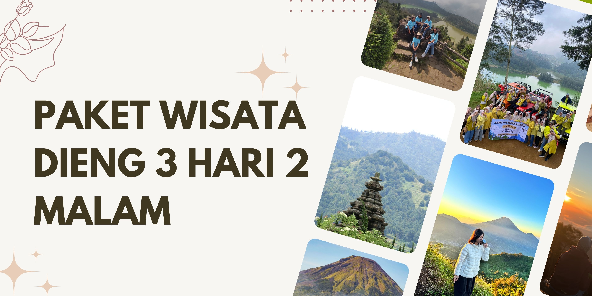

Paket Wisata Dieng 3 Hari 2 Malam – Eksplorasi Santai, Jelajah Alam dan Budaya Dieng Lebih Luas
Paket 3 hari 2 malam ini dirancang khusus bagi Anda yang ingin menikmati atmosfer Dieng secara menyeluruh. Tidak hanya menjelajah destinasi populer, Anda juga akan diajak mengeksplorasi spot-spot baru, mencicipi pengalaman khas lokal, dan punya waktu lebih banyak untuk beristirahat maupun menikmati keindahan alam tanpa terburu-buru. Dengan waktu yang lebih panjang, setiap momen liburan bisa dijalani secara santai namun tetap berkesan.
Seluruh kebutuhan perjalanan sudah kami persiapkan: mulai dari transportasi yang nyaman, penginapan selama dua malam, hingga konsumsi dan pemandu wisata. Anda cukup fokus menikmati perjalanan bersama teman, keluarga, maupun rekan kerja, karena semua detail logistik sudah diurus oleh tim kami.
Fasilitas
- Kendaraan: Armada khusus wisata, full AC, dilengkapi pengemudi berpengalaman yang siap melayani selama tiga hari penuh.
- Penginapan 2 malam: Akomodasi pilihan dengan fasilitas memadai, bisa request kamar privat atau sharing sesuai kebutuhan peserta.
- Layanan makan 7x: Tujuh kali makan termasuk sarapan, makan siang, makan malam, serta camilan khas Dieng di beberapa destinasi.
- Tiket masuk destinasi wisata: Seluruh tiket objek wisata selama program sudah termasuk dalam paket, tanpa biaya tambahan.
- Driver: Pengemudi profesional, paham rute wisata dan lokasi kuliner lokal.
- Tour guide: Pemandu lokal yang siap mendampingi, memberikan informasi, dan membantu kebutuhan peserta.
- BBM: Semua kebutuhan bahan bakar kendaraan selama trip sudah termasuk.
- Parkir & tol: Seluruh biaya parkir dan tol selama perjalanan telah disiapkan.
- Air mineral: Air minum untuk seluruh peserta selama trip berlangsung.
Destinasi
- Bukit Sikunir: Lokasi favorit sunrise dengan panorama khas pegunungan.
- Telaga Cebong: Danau di kaki Sikunir, cocok untuk bersantai pagi hari.
- Kawah Sikidang: Fenomena geothermal dengan aktivitas vulkanik yang unik.
- Komplek Candi Arjuna: Warisan sejarah di tengah dataran tinggi Dieng.
- Batu Ratapan Angin: Tempat terbaik menikmati view dua telaga dari ketinggian.
- Dieng Plateau Theater: Bioskop mini yang menampilkan film seputar budaya dan alam Dieng.
- Taman Pintu Langit: Taman modern dengan spot foto dan area relaksasi keluarga.
- Pemandian Air Panas Dieng: Pengalaman berendam air hangat alami di pegunungan.
- Kahyangan Skyline: Tempat menikmati lanskap Dieng secara luas dari gardu pandang.
- Dieng Park: Taman rekreasi dengan wahana outdoor untuk keluarga dan anak-anak.
- Bukit Scooter: Spot hits untuk melihat sunset dengan latar perbukitan hijau.
- Air Terjun Sikarim: Air terjun alami di kawasan Wonosobo dengan suasana segar.
- Telaga Menjer: Danau besar di kaki gunung, cocok untuk santai dan berfoto.
- Perkebunan Teh: Menikmati area perkebunan, suasana hijau, dan aktivitas petani setempat.
- Sentra Oleh-oleh dan Kuliner: Tempat mencari cendera mata dan mencoba makanan khas Dieng dan Wonosobo.
Itinerary
Hari Pertama
| Aktivitas | Deskripsi |
|---|---|
| Penjemputan & perjalanan ke Wonosobo | Bertemu di meeting point kota asal (Wonosobo, Jogja, Semarang, Purwokerto, Solo, dll.), dilanjutkan perjalanan santai ke Dieng. Makan siang bersama di resto lokal. |
| Taman Pintu Langit | Mengawali trip dengan foto dan bersantai di taman tematik kekinian. |
| Kahyangan Skyline | Menikmati pemandangan luas dari gardu pandang, cocok untuk foto bersama. |
| Dieng Plateau Theater | Menonton film dokumenter tentang sejarah dan kebudayaan Dieng. |
| Dieng Park | Bermain di taman rekreasi keluarga, menikmati wahana dan udara sejuk. |
| Check-in penginapan & makan malam | Check-in hotel/homestay pilihan, makan malam bersama, acara santai bebas. |
Hari Kedua
| Aktivitas | Deskripsi |
|---|---|
| Pagi di Bukit Sikunir & Telaga Cebong | Berangkat pagi untuk sunrise di Bukit Sikunir dan menikmati udara segar di Telaga Cebong. |
| Sarapan di penginapan | Kembali ke penginapan untuk sarapan dan istirahat. |
| Kawah Sikidang | Mengunjungi kawah vulkanik, melihat fenomena uap panas secara langsung. |
| Komplek Candi Arjuna | Jelajah kompleks candi, belajar sejarah dan budaya Dieng. |
| Batu Ratapan Angin | Berfoto di spot favorit dengan panorama dua telaga dan perbukitan. |
| Pemandian Air Panas Dieng | Berendam dan relaksasi di sumber air panas alami Dieng. |
| Bukit Scooter | Menikmati sore dan sunset di bukit dengan panorama pegunungan hijau. |
| Makan malam & acara santai | Makan malam di penginapan, waktu bebas untuk beristirahat atau jalan-jalan malam di sekitar homestay/hotel. |
Hari Ketiga
| Aktivitas | Deskripsi |
|---|---|
| Air Terjun Sikarim | Pagi hari kunjungan ke air terjun alami dengan suasana asri di kaki gunung. |
| Telaga Menjer | Singgah di danau luas yang jernih, menikmati pemandangan dan udara pegunungan. |
| Perkebunan Teh | Jalan-jalan di kebun teh, melihat aktivitas petani dan menikmati suasana hijau. |
| Sentra Oleh-oleh & Kuliner | Waktu untuk belanja oleh-oleh dan mencicipi jajanan khas Dieng dan Wonosobo. |
| Check-out & perjalanan pulang | Packing, check-out penginapan, lalu diantar kembali ke kota asal/meeting point awal. Trip selesai. |
Panduan Perjalanan
Cuaca di Dieng umumnya sejuk, dengan udara segar dan kadang berkabut terutama pagi dan malam hari. Disarankan membawa pakaian hangat, perlengkapan pribadi, serta sepatu yang nyaman untuk berjalan di alam. Seluruh destinasi dapat diakses dengan mudah, cocok untuk berbagai usia. Untuk kebutuhan khusus atau permintaan khusus, peserta bisa menghubungi tim reservasi sebelum keberangkatan.
Meeting Point (Mepo)
Penjemputan tersedia di Wonosobo, Jogja, Semarang, Purwokerto, Solo, serta area lain di Jawa Tengah dan DIY. Bisa dari bandara, stasiun, hotel, atau titik temu lain yang disepakati saat reservasi.
Pertanyaan yang Sering Ditanyakan
Bisa request destinasi tambahan atau program privat?
Bisa, program dapat disesuaikan untuk keluarga atau grup tertentu, termasuk penambahan destinasi di luar itinerary utama.
Bisa mulai dari luar kota Wonosobo?
Meeting point dapat diatur dari berbagai kota di Jawa Tengah & DIY, dengan penyesuaian jadwal dan biaya.
Bagaimana fasilitas penginapan?
Penginapan berupa hotel atau homestay pilihan dengan fasilitas lengkap, tersedia opsi kamar privat maupun sharing.
Apakah sudah termasuk makan dan tiket wisata?
Ya, semua makan dan tiket objek wisata sudah termasuk dalam paket, tanpa biaya tambahan.
Jika cuaca tidak mendukung?
Agenda bisa diatur ulang agar tetap nyaman dan semua destinasi utama tetap bisa dikunjungi.
Bisa upgrade hotel atau tambah fasilitas lain?
Bisa, silakan infokan pada tim reservasi untuk penyesuaian paket sesuai kebutuhan Anda.
Lihat Gallery Foto dan Video →
Pengalaman lebih dari 12 tahun, ribuan peserta puas. Konsultasi gratis, itinerary bisa menyesuaikan kebutuhan group, family, atau private traveler.